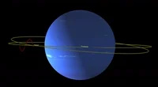

Uranus

Uranus de zevende planeet vanaf de zon draait in een hoek van bijna 90 graden vanaf het vlak van zijn baan.
Door deze unieke kanteling lijkt Uranus op zijn kant te draaien.
REUSACHTIG
Uranus is ongeveer vier keer breder dan de aarde.
Als de aarde een grote appel was, zou Uranus zo groot zijn als een basketbal.
IJSREUS Uranus
Het grootste deel van zijn massa is een hete, dichte vloeistof van "ijzige" materialen
water, methaan en ammoniak boven een kleine rotsachtige kern.